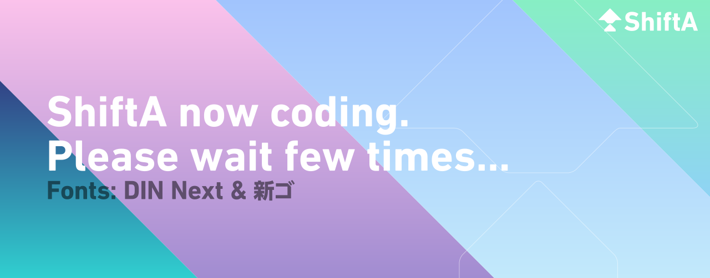

Home
Workshift
Leatest:2017 March
All Workshifts
Portfolio
Leatest:Issue 01
All Portfolios
Previous Slide
◀︎
Next Slide
▶︎

現在製作中。完成をお待ちください。
現在製作中。完成をお待ちください。
現在製作中。完成をお待ちください。
First slide details.
Current Slide
Second slide details.
Third slide details.
What’s ShiftA?
ShiftAは、自分の作品公開を目的としたコンテンツです。
現在は、ShiftAは本サイトのShiftA Pagesと、
雑誌を模したポートフォリオShiftA Magazineで展開しています。
ShiftA Pagesでは、Workshiftによる作品紹介、
PortfolioではShiftA Magazineを閲覧できます。
Profile
Masaki Ando
安藤 真生
About Workshift
Workshiftは、「テーマごとに作品を10個選び、公開する」システムです。 フォント、カラー、タイプ、様々なテーマで季節ごとに作品を選んでいき、 ShiftA Pagesのトップページにて紹介しています。 また、過去のWorkshiftも見ることができます。
About Portfolio
Portfolio:ShiftA Magazineは、ライフスタイル誌を模して発行しているポートフォリオです。 2017年3月に第1号「将来を見つめて。」を始め、不定期で刊行しています。 ShiftA PagesのPortfolioではShiftA Magazine以外にも、 過去に作成したポートフォリオを公開しています。